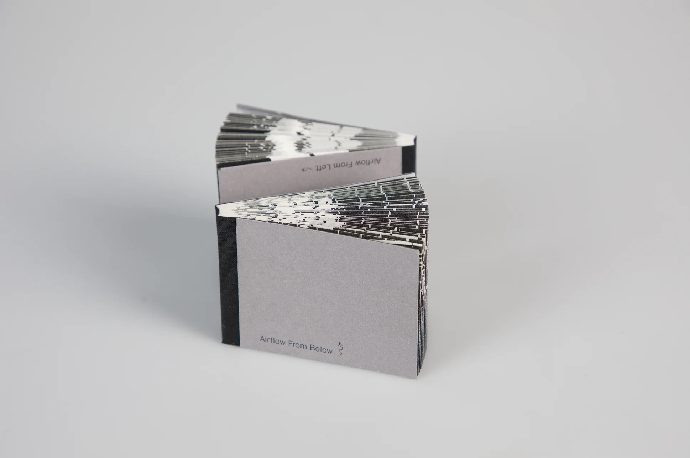
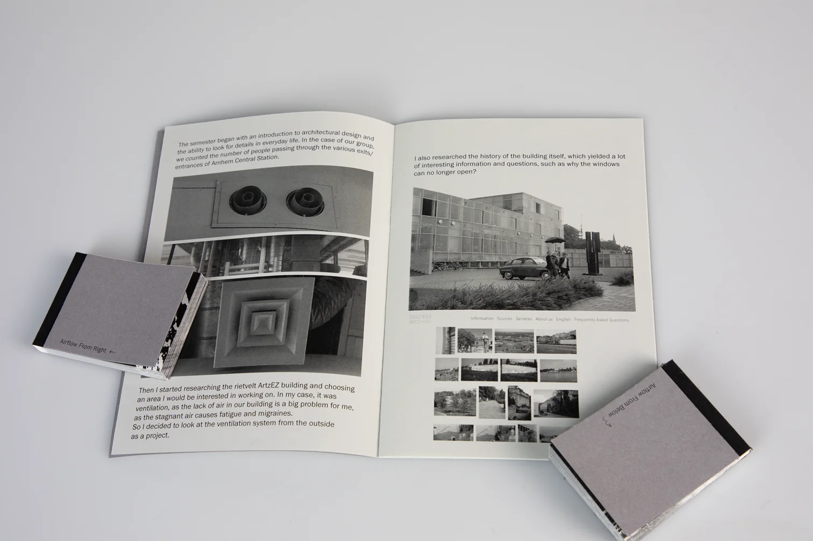

Airflow
This project was created to highlight the poor ventilation system in the ArtEZ Rietveld building. Through research using photo archives and experiments with different ventilation designs in the building, I created two double-sided flipbooks, which are associated with those very ventilation vents. That’s why I filmed the ventilation from four sides—above, below, left, and right—which reveals a strong contrast in the movement and force of the air. This approach can also be implemented in other contexts or projects, emphasizing airflow dynamics visually.




